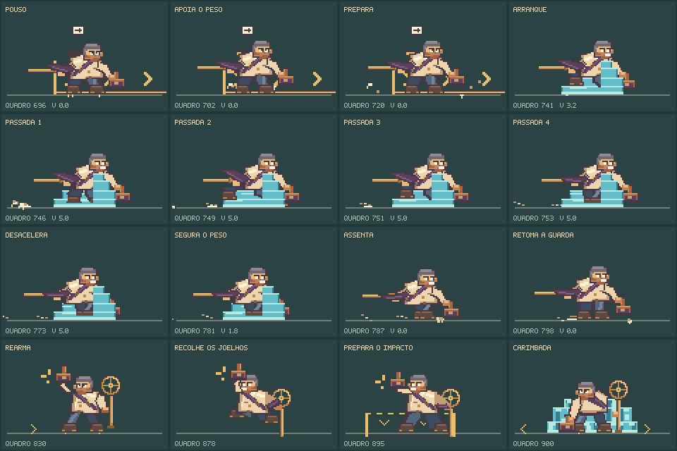

Mais peso.
Mais clareza.
O Prefeito acelera, cruza a arena e freia dentro do corredor anunciado. As botas, o corpo, a faixa e a água acompanham esse movimento. A luta mantém suas investidas, reversões, jatos e carimbadas.
Uma investida que carrega peso
Percurso completo de 37,63 s, sem dano. Captura a 30 fps, simulação a 60 Hz, sem áudio. A água continua perigosa durante a desaceleração.
Apoio e impulso. A aterrissagem comprime os joelhos. As passadas seguem a distância percorrida; a poeira fica para trás no arranque e segue para a frente na parada.
Frenagem real. O chefe inclina o corpo para segurar o peso e reduz a velocidade antes do ponto final. A reversão conserva sua preparação completa.
Do pouso à próxima carimbada

A sombra permanece no chão quando o Prefeito passa por baixo da passarela. O modo de movimento reduzido conserva a preparação e os perigos, com menos movimento decorativo e sem as partículas dos passos.
O registro muda os sinais da arena
As setas das ondas somem assim que o registro cancela esse perigo. O alvo da carimbada continua marcado: o corte elimina a pressão adicional, mas o chefe mantém a sequência física. Depois do último impacto, reabrir o registro dá acesso ao contra-ataque.
Percurso completo de 32,63 s, usando os dois registros, sem dano.
Ver os jatos e a luta pela passarela
O bocal acompanha a descarga
O obturador fica aberto enquanto o jato sai e fecha em etapas. Isso também vale para o disparo alto que acompanha a investida. O aviso âmbar, a descarga ciano e a boca fechada correspondem ao estado real do mecanismo.
Percurso completo de 36,60 s, sem dano.
Conferência no jogo
3.619 testes passaram, incluindo 15 casos novos desta revisão. Compilação concluída. Cinco percursos passaram com teclado e toque simulado, pausa e reinício. A campanha normal foi concluída com gamepad simulado, retorno ao mapa e progresso preservado após recarregar.
Resultados desta rodada · Capturas nativas · Quadros das animações
As gravações são execuções ensaiadas. Confirmam percursos possíveis, colisões e transições; a avaliação de dificuldade para quem joga pela primeira vez exige partidas de pessoas sem conhecimento prévio.